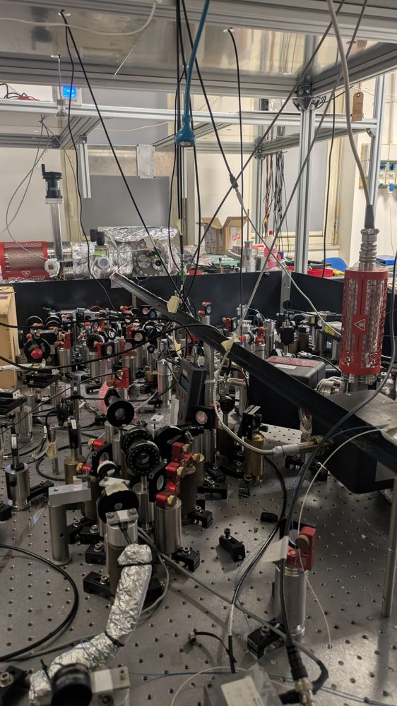
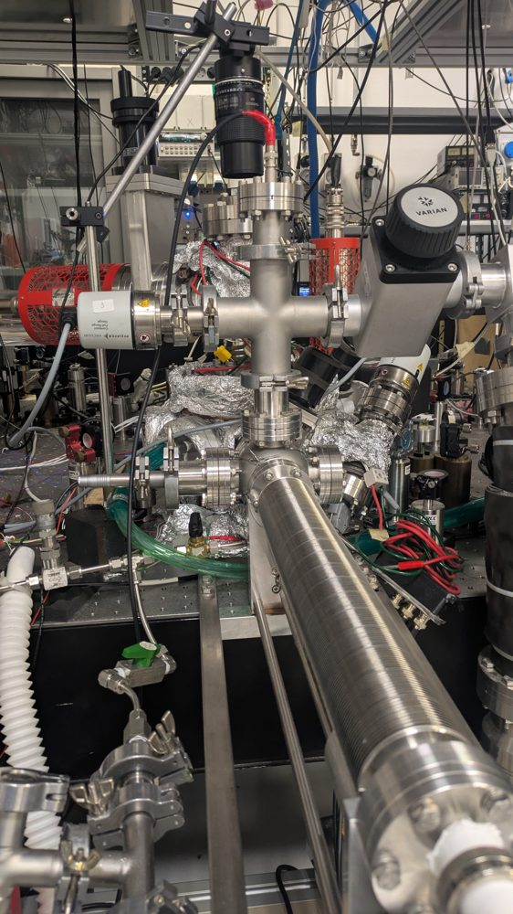

Unirsi al gruppo o venirci a trovare
Al momento non abbiamo posizioni finanziate da post-doc o dottorato. Se vuoi unirti al gruppo, ad esempio candidandoti insieme a noi a una borsa o a un finanziamento, contattaci e raccontaci il tuo percorso e i tuoi interessi.
Se vuoi venire a trovare il gruppo, per qualche giorno o per un periodo più lungo, scrivici e vedremo cosa è possibile fare.
Tesi di laurea magistrale
Se i nostri temi di ricerca ti interessano, siamo sempre felici di discutere possibili argomenti di tesi. Contattaci e vedremo cosa è disponibile.
Contatti e dove siamo
Florence Optomechanics
Dipartimento di Fisica e Astronomia
Via Sansone, 1 - 50019 Sesto Fiorentino (FI)
francesco.marin@unifi.it

